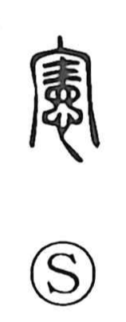

憲

Uncategorized
Kun: nori | On: ken
constitution ・ rule ・ law ・ regulation ・ model
Explanation
A phono-semantic character built on 審 as its phonetic, 憲 ultimately grows out of the older graph 審. In that graph, the upper element is the same as in 害, an image of a large handled needle, and 審 depicts the act of marking a punitive tattoo above the eyes—hence the sense of punishment. Early Zhou bronze inscriptions, from around 3,300 years ago, even mention a person named 審, apparently an official responsible for carrying out punishments. From this base, 憲 came to mean the rules and law that set things right through penal correction, and by extension took on the senses of regulation, example, and model—captured in the Book of Odes phrase 萬邦為憲, “a model for all the states.”